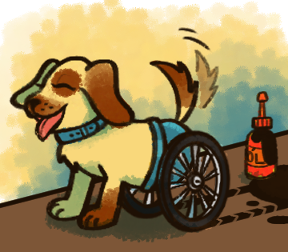
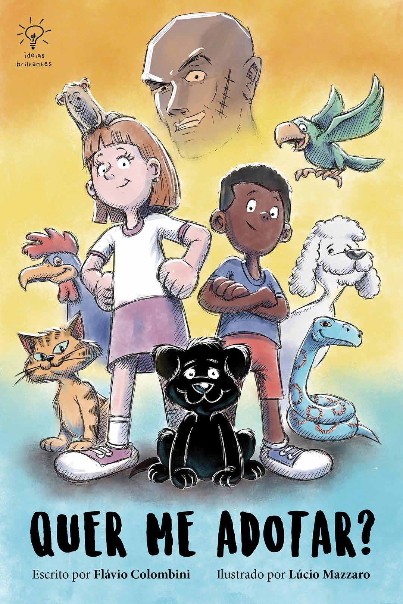
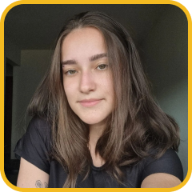

QUER ME ADOTAR?
Autor
Flávio Colombini
Publicação Original
Ideias Brilhantes Editora
Realização
Projeto de Extensão Léia
Universidade Federal de Pelotas
Contatos do autor
Site: www.flavito.com.br
Redes sociais: @flaviocolombini
Flávio Colombini
Ideias Brilhantes Editora
Projeto de Extensão Léia
Universidade Federal de Pelotas
Site: www.flavito.com.br
Redes sociais: @flaviocolombini
Carolina Bravo Pillon
Alice Andrade Kosby
Ana Júlia dos Santos Vianna
Jean Pierre Vaz Dias
Débora Bianca Taveira de Moura
Náthely Santana
Geovanna Cardoso Baptistone
Giovanna Rodrigues
Roger da Silva de Matos
João Pedro Alcalde Guimarães
Mariana Teixeira de Ferreira
Náthely Santana
Camille de Avila Voigt
Érica Camelatto Machado
Guilherme Reinhardt Ugoski
Emilly Braga Mercês
Isabel Rodrigues Da Fonseca Haro
Vitória Vieira Dos Santos
O objetivo desse projeto de extensão é, especialmente, estimular o hábito da leitura entre as crianças que vivem no abrigo, bem como capacitar os alunos no desenvolvimento de livros digitais interativos. O autor, Flavio Colombini, gentilmente nos cedeu a primeira parte da obra “Quer me adotar?” para que pudéssemos elaborar uma versão interativa do livro. Esse livro foi desenvolvido em um contexto acadêmico e apenas com fins educativos - não comerciais.
A obra completa do autor pode ser acessada no link: https://www.flaviocolombini.com/.
Links dos livros do autor:
Uma linda cadela, chamada Mel, teve cinco filhotinhos. Eu era um deles. Recebi o nome de Toby.
Quando mamãe se deitava para nos alimentar, meus irmãos sempre conseguiam mamar antes de mim, e eu ficava por último.
Daí eles pegavam logo no sono, e eu ficava com a mamãe só pra mim, até que eu também dormia.
Os donos da minha mãe não tinham condições de ficar com os filhotes.
Ofereceram a gente para parentes, amigos e conhecidos, mas ninguém queria adotar cachorrinhos.
Só depois de tentarem muito é que conseguiram doar dois filhotes. Mas ainda sobraram três: eu e meus irmãos Bob e Teca.
Quando crescemos um pouquinho, decidiram nos levar embora. Foi triste ter que me despedir da minha mãe tão cedo na vida.
"Tchau, mamãe!

Para onde será que iriam nos levar?
Fomos deixados num lugar chamado Lar Animal. Era um abrigo para bichos e um centro de adoção. Colocaram a gente num espaço pequeno e fechado. Logo sentimos falta da mamãe.
Não tínhamos mais o colo quentinho dela pra dormir, as tetas dela para nos amamentar, a língua dela para nos acariciar, nem o amor dela pra nos confortar. Aprendemos a tomar leite frio numa tigela e a cuidar uns dos outros.
No abrigo, havia muitos animais. Tinha cachorros, que latiam alto. Tinha gatos, que miavam. Pássaros, que cantavam. Um galo, que cocoricava. Um papagaio, que gritava. Tinha também animais silenciosos como coelhos, hamsters, porquinhos-da-índia, uma tartaruga e até uma cobra. Num aquário, havia alguns peixes.
Cada animal tinha sua história. O cachorro Pingo tinha se perdido dos donos. O gato Lalau tinha fugido de casa.
O galo era colocado em rinhas (brigas de galos) e já tinha se machucado bastante.
O antigo dono do papagaio perdeu a guarda dele porque o levava pra beber pinga no bar e lhe ensinava a falar palavrões para rir com os amigos. Outros bichos tinham sido abandonados ou sofrido negligência ou maus-tratos. Mas a maioria dos animais era como nós, que estávamos ali só porque nossos donos não tinham mais condições de ficar com a gente.
O centro de adoção recebia visitas de pessoas interessadas em adotar algum bichinho de estimação. Quando um visitante aparecia, todos os animais ficavam alvoroçados, tentando ser simpáticos, na esperança de chamar a atenção dos visitantes. Assim, tinham mais chances de serem adotados.
O dono do abrigo se chamava Alberto. Ele sustentava o local sozinho, com ajuda de doações. Mas estava sempre lamentando a falta de dinheiro. Vários voluntários o ajudavam a cuidar dos animais. Eles nos davam comida, limpavam nosso cocô e xixi, nos davam banho uma vez por semana e até nos davam carinho, quando sobrava um tempinho.
À noite, o local ficava mais triste. Os funcionários iam embora e deixavam os animais sozinhos. Alguns cães choravam e uivavam de tristeza.
No segundo dia em que estávamos lá, uma mãe e sua filha vieram e ficaram olhando alegres para mim. Fiquei feliz com a atenção. Abanei meu rabinho e fiz uma gracinha. Elas sorriram. Será que iriam me adotar? A mulher falou com o voluntário do abrigo e apontou para o lugar em que eu estava. O moço a acompanhou e perguntou à menina:
— Qual você vai querer?
A garota apontou para mim.
A mãe dela, porém, falou:
— Não, o pretinho não!
— Mas eu gostei dele... — insistiu a filha.
A mãe não lhe deu ouvidos e falou para o voluntário:
— Vamos levar o cinza-claro.
Ela apontou para meu irmão, Bob. O moço o pegou e entregou à menina.
Ela hesitou, mas pegou o filhote nas mãos e abriu um sorriso, mostrando que estava feliz. Eu fiquei triste, pois não fui adotado e ainda perdi meu irmão. Não tive nem tempo de me despedir dele.
Agora só sobramos Teca e eu. Nós comíamos bem e brincávamos bastante um com o outro. Mas isso era tudo que podíamos fazer naquele lugarzinho, que foi ficando cada vez mais apertado, conforme a gente crescia. Teca queria que uma família adotasse nós dois juntos, pra gente nunca se separar.
Um dia, chegou um pai, uma mãe e um filho. Ficaram olhando todos os cachorros e pararam na gente. Ficamos felizes e esperançosos. Latimos, pulamos, fizemos festa pra eles. Até que o garoto tomou uma decisão e apontou para minha irmã. O funcionário a pegou e a deu para o menino sorridente. Teca olhava pra mim com dúvida.
Não sabia se ficava feliz por estar sendo adotada, ou se ficava triste por se separar de mim. Quando a levaram, eu lati, dizendo pra ela ficar feliz.
Eu não tinha dúvida. Estava triste. Não fui adotado e ainda fiquei sem meus irmãos. Estava sozinho. E agora, o que seria de mim?
Naquela noite, eu chorei. Quando os outros cães ouviram meu lamento, começaram a chorar também, pra me fazer companhia.
Senti-me confortado por receber o apoio deles. Os humanos não me queriam, meus irmãos se foram, mas, naquele momento, percebi que tinha muitos amigos naquele abrigo e podia contar com eles.
Por que será que ninguém queria me adotar? Quando aparecia um visitante, eu tentava ser simpático, deixava a pessoa me acariciar, lambia a mão dela, fazia cara de coitadinho. Mas nada dava certo. O que havia de errado comigo?
Com o tempo, muitas pessoas foram passando por lá, para adotar um bichinho ou para trazer um animal que precisava de adoção.
Até que eu cresci. O dono do abrigo comentou:
— Que pena que ele não foi adotado ainda filhote! Quando já está adulto, é bem mais difícil. Além disso, tem gente que não gosta de cães e gatos pretos.
Um dia, chegou lá uma cadela, chamada Lucy, que tinha sido atropelada e perdido o movimento das patas de trás. Ela estava muito abalada. Seu Alberto pegou as rodas de uma bicicleta infantil descartada e construiu um andador para Lucy, que ficou toda feliz em poder caminhar de novo.
Ela chamava a atenção dos visitantes e, em pouco tempo, já foi adotada. Confesso que senti uma pontinha de inveja dela pela adoção rápida, enquanto eu esperava, esperava...
Tinha uma menina, chamada Clara, que morava na mesma rua e costumava visitar o abrigo. Ela amava animais, mas seus pais não a deixavam ter um, porque a casa em que moravam era pequena. Já que não podia adotar um, resolveu ajudar a todos e se tornou voluntária no abrigo. Ela sempre perguntava ao seu Alberto como podia ajudar.
Ele indicou um cão, chamado Bento. Ele apanhara muito do antigo dono, que perdeu a guarda do animal devido aos maus-tratos. Só que agora Bento tinha medo de seres humanos. Quando alguém chegava perto, ele se afastava e se encolhia no canto, tremendo de medo.
Então Clara teve uma ideia. Ela tinha na mochila um livro infantil, que havia pego emprestado na biblioteca da escola. Sentou-se perto do cão e começou a ler a história para ele em voz alta.
Isso ajudou Clara a praticar, pois ela tinha dificuldade de leitura. Aos poucos, Bento foi se acostumando com a pre-sença da garota e perdendo o medo dos humanos. Os dois foram beneficiados com essa troca.
Clara ficou minha amiga também e, sempre que chegava no abrigo, me acariciava e conversava comigo.
Uma vez, dois jovens mal-encarados pararam na frente do Lar Animal.
Reparei que um deles tinha uma cicatriz de queimadura na mão direita. Eles olhavam atentamente uma senhora que estava visitando o abrigo e tirava fotos de vários animais com um telefone celular bonito.
Quando ela saiu, ficou parada na porta com o celular na mão. Um dos jovens fechou a cara, atravessou a rua e caminhou em direção a ela. Eu achei suspeita aquela atitude e comecei a latir bem alto.
Quando o moço ia pegar o celular da senhora, assustou-se com meu latido e hesitou.
A mulher percebeu o perigo, guardou o celular na bolsa e entrou de volta no abrigo.
Os jovens se afastaram. Clara viu a cena e foi falar com a mulher:
— A senhora chamou um táxi? É melhor esperar aqui dentro. Tem dois caras que costumam roubar celulares aí na rua.
Depois, a menina veio falar comigo:
— Obrigada, Toby, por assustar os ladrões! Você acredita que eles costumam ficar parados na frente da minha janela, fumando um cigarro fedido e falando besteira?
— Ela franziu a testa e concluiu: — Não gosto deles!
Certa vez, uma pessoa adotou todos os peixes do aquário, mas deixou só um, que tinha uma nadadeira defeituosa. O apelido dele era Velhinho. Ele ficou morando sozinho no aquário. Às vezes trocávamos olhares. Eu sentia dó de vê-lo tão solitário.
Chegou uma hora em que eu fiquei cansado de morar num espaço tão apertado. Mas não podia fazer nada pra mudar minha situação. Só podia sonhar. Desejava tanto ter um dono pra me dar carinho, brincar comigo, me levar pra passear e correr num lugar amplo. Queria ser amado, livre e feliz. Será que isso era pedir demais?
Num belo dia, finalmente chegou a minha vez. Um casal de idosos apareceu e gostou de mim. Eles resolveram me adotar! Mal podia acreditar que meu sonho estava sendo realizado!
Eles me levaram para a casa deles. Era um lugar lindo e espaçoso. Eu fiquei tão feliz que mal podia me conter. Saí correndo pela casa e fui pro quintal. Fiz xixi nas plantas, depois cavouquei o chão com as patas traseiras. Que delícia ter tanto espaço pra brincar! Sem querer, derrubei um vaso, que caiu no chão e se quebrou. Em seguida, vi umas roupas penduradas num fio. Pulei e as puxei para o chão para brincar com elas. O casal começou a gritar comigo.
Eles não pareciam muito felizes com aquilo, mas eu estava tão empolgado que não liguei pra opinião deles.
Quando os dois saíram para pegar as roupas do chão, eu entrei na casa e inspecionei o local. Achei um sofá tão fofinho que deu vontade de morder, para ver o sabor que tinha. Não era gostoso, mas era divertido. Continuei brincando ali até que os meus novos donos voltaram. Acho que eles não gostaram de me ver comendo o sofá deles.
Na mesma hora, colocaram-me no carro e me levaram de volta pro Lar Animal, onde falaram que eu não me adaptei à casa deles e que estavam me devolvendo. Fiquei confuso e não consegui entender por que eles não gostaram de mim, se eu gostei tanto deles. Mas, àquela altura, eu não podia fazer mais nada. Lá estava eu, de volta ao meu cubículo de sempre.
Certa vez, ouvi Seu Alberto mencionar que tinha acabado todo o seu dinheiro. O abrigo estava recebendo pouquíssimas doações. Ele reclamou que o local estava precisando de reformas, principalmente na parte elétrica. Também disse que só tinha ração para aquele dia. No dia seguinte, os animais já não teriam mais o que comer. Ele estava chateado e sem esperança.
Naquela noite, quando todos os bichos estavam dormindo, eu acordei com um barulhinho estranho. Vi uma tomada com uns fios elétricos soltos dando curto- circuito e soltando faíscas. Abaixo dela havia uma pilha de jornais, que eram usados para forrar o chão dos recintos dos animais.
De repente, os jornais começaram a pegar fogo. Fiquei preocupado. Se aquelas chamas se espalhassem pelo abrigo, os bichos morreriam queimados.
Todos os animais despertaram e o que fazer. Os cães começaram a latir, os gatos, a miar, e os pássaros, a piar.
Eu resolvi agir. Dei um pulo alto e consegui sair do meu cercado.
Cheguei perto do fogo e comecei a latir. Não sabia como apagar aquelas chamas.
Foi então que eu olhei para o aquário e tive uma ideia: e se eu conseguisse usar a água do aquário para apagar o fogo? Daí eu olhei para o peixe solitário. Ele olhou para mim. Senti que ele estava tentando se comunicar comigo. Eu lati dizendo que, se eu jogasse o aquário no fogo, ele iria morrer. Ele me respondeu: "Não se preocupe. Eu já sou velho e vivi bem minha vida. O mais importante é salvar os outros animais".
Eu puxei uma cadeira, subi nela e comecei a empurrar o aquário, mas era muito pesado e mal se movia. Empurrei com mais força, e nada. Depois desci e me afastei. Então corri, peguei impulso, pulei e empurrei com toda a minha força o aquário, que finalmente se moveu e foi para o chão.
Caiu com tudo e se quebrou. A água do aquário conseguiu apagar o fogo. Oba! Que ótimo!
Mas o fogo já tinha se espalhado por uma cortina. E agora, o que faço?
Eu pulei alto, agarrei a cortina com minha boca. Ela se soltou e caiu no chão. Eu fiquei arrastando a cortina em chamas pelo chão molhado, até o fogo se apagar por completo. Ufa, finalmente estávamos salvos!
Então eu vi o peixe solitário se debatendo no chão. Tive uma ideia. Peguei-o com a boca, coloquei meu focinho pra dentro do recinto do Bento e joguei o peixe na tigela de água que estava ali. Era um espaço apertado, mas pelo menos o peixe continuou vivo.
Todos os animais ficaram alegres, me agradeceram e fizeram festa pra mim. Fiquei muito feliz!
No dia seguinte, quando os voluntários chegaram, me viram fora do meu espaço e ao lado daquela bagunça. Acharam que eu tinha feito tudo aquilo por pura malcriação. Ficaram bravos e me deram uma bronca. Depois, foram olhar a gravação da câmera de segurança e finalmente entenderam o que tinha acontecido.

Daí eles mudaram completamente de atitude. Ficaram felizes comigo por ter salvado o local de uma tragédia.
Publicaram o vídeo do salvamento na internet. Chamou muita atenção. Teve milhões de visualizações. O público ficou sensibilizado com a situação do abrigo e começou a doar dinheiro para ajudar.
O Lar Animal recebeu muitas doações. Seu Alberto me abraçou com força e disse:
— Primeiro você nos salvou do incêndio e depois nos salvou da falência! Agora temos dinheiro pra comprar comida pros animais, pagar as dívidas e ainda fazer uma reforma tão necessária.

Graças ao vídeo, eu fiquei famoso. Apelidaram-me de Cachorro Bombeiro ou Cão Salvador. Então muitas e muitas pessoas quiseram me adotar.
Seu Alberto e os voluntários não sabiam o que fazer com tantos pretendentes. Até que acharam uma solução. Pediram pra que todas as pessoas interessadas em me adotar fossem a uma praça próxima ao abrigo, no sábado seguinte, às 10 horas da manhã.
Apareceu bastante gente, inclusive fotógrafos, cinegrafistas e repórteres de jornais, TVs e outras mídias. O dono do abrigo falou para todos os interessados em me adotar:
— Façam uma roda e deixem um espaço no meio.
Daí ele me colocou naquele espaço e anunciou:
— Vamos deixar o próprio Toby, nosso cachorro herói, escolher quem vai ser o seu dono.
Eu fiquei ali no meio, sem saber muito bem o que fazer. Olhei todas as pessoas que estavam à minha volta. Havia homens, mulheres, velhos e crianças. Algumas pessoas cumprimentaram um senhor, chamado Júlio, que parecia muito rico.
Reparei também numa mulher vistosa. Ouvi dizerem que o nome dela era Diva, uma atriz famosa, defensora dos animais. Pensei em ir até ela, mas hesitei.
Percebi que sentia mais atração pelas crianças. Fiquei olhando cada uma delas. Até que vi um grupo de crianças unidas. Elas me olharam com tanta esperança que, sem pensar, eu fui andando em direção a elas e as deixei me acariciar.
Seu Alberto então gritou para todos:
— É com alegria que anuncio que as crianças do Centro de Acolhimento Vida Nova vão ganhar a guarda do Toby!
Todo mundo gritou de alegria, inclusive eu, que lati alto, vibrando de felicidade por finalmente estar sendo adotado.
Voltamos ao Lar Animal, onde me despedi de todos os bichos. Os voluntários me deram um abraço coletivo, e Seu Alberto me disse:
— Você foi o cachorro mais especial que já passou pelo nosso abrigo. Obrigado por tudo! E que você seja muito feliz no seu novo lar!
Então, fui levado para a minha nova casa. Descobri que as crianças que moravam lá não tinham família, por diversas razões diferentes.
Algumas, os pais tinham falecido, outras tinham sido abandonadas, ou sofrido maus tratos, ou os pais usavam drogas, ou tinham sido presos... Assim, todas elas vieram parar naquele centro de acolhimento.
Achei que aquela era uma grande coincidência. Assim como eu tinha passado muito tempo em um abrigo, esperando para ser adotado, aquelas crianças também estavam na mesma situação, aguardando para serem adotadas ou voltar para a guarda dos pais ou parentes.
Eu me apaixonei pelas crianças que me adotaram. Brincávamos juntos o tempo todo. Elas me davam muita atenção e carinho, e eu lhes dava o meu amor. Finalmente meu sonho estava realizado! Fiquei infinitamente feliz!
Chegamos ao fim da nossa história. Que tal imprimir um desenho do Toby para pintar?
Toque no botão para baixar e imprimir o desenho para colorir.
Vamos decorar e montar uma caixinha para o Toby?
Toque no botão para baixar e imprimir atividade.
O livro “Quer me adotar?” tem 3 partes. Esse livro contou somente a primeira parte da história. Acesse o link para ler a continuação: https://www.flaviocolombini.com/quer-me-adotar
Flávio Colombini: Sou formado em Cinema. Comecei escrevendo roteiros, depois migrei para os livros infantis. A ideia para essa história ficou guardada por muito tempo na minha mente. Até que tomei coragem e escrevi o texto inteiro no computador, com muita paciência e carinho. Espero que você tenha gostado do resultado! Na vida real, eu nunca tive um cachorrinho, mas, na imaginação, eu já tenho. Ele se chama Toby e é um herói. Uma versão maior desse livro, com mais aventuras do cachorro Toby, está disponível para ser lida e baixada gratuitamente no meu site www.flavito.com.br. Lá você também vai poder conhecer os outros livros que escrevi e assistir aos filmes que fiz.

Alice Andrade Kosby: Estudante de Design Digital na UFPel, atuei no design editorial deste projeto. Como uma leitora ávida desde a infância, é gratificante poder contribuir com uma iniciativa que desperta o interesse pela leitura nas crianças, um hábito que transforma vidas.
Ana Júlia dos Santos Vianna: Estudante de Design Digital na UFPEL, sou estagiária na área de design. Atuei no design editorial do livro. Como uma apaixonada por livros e universos literários, foi muito importante e gratificante participar da construção do projeto.
Camille de Avila Voigt: Estudante de Design Digital pela UFPel e estagiária em Product Design. Auxiliei no desenvolvimento da página inicial do site do projeto. É muito gratificante poder contribuir em projetos na graduação que constroem uma relação com a sociedade e que impactam positivamente na realidade das pessoas.
Carolina Bravo Pillon: Professora nos cursos de Design Gráfico/Digital da UFPel. Coordenadora do projeto de extensão “Desenvolvimento de um portfólio de livros digitais interativos para as crianças abrigadas”. A ideia para criar esse projeto surgiu de um trabalho voluntário que realizei como contadora de histórias em um abrigo. Minha motivação é despertar o interesse pela leitura nas crianças que vivem no abrigo.
Débora Bianca Taveira de Moura: Estudante de Design Digital pela UFPel, Designer Júnior na Hand Talk e Ilustradora no tempo livre. Fui responsável por criar os conceitos artísticos e rascunho para as ilustrações do projeto. Fico feliz de ser uma dos viabilizadores em tornar a leitura leve e acessível por meio de imagens projeto, pois tenho certeza que ele impactará positivamente as crianças que lerem nosso livro digital.
Emilly Braga Mercês: Estudante de Design Digital pela UFPel,e ilustradora freelancer, e ajudei com o design editorial das imagens do projeto. Fiquei animada de trabalhar num projeto que incentiva uma das coisas que eu gosto, a leitura, e ajudar a fazer com que esse hábito passe para os outros.
Érica Camelatto Machado: Estudante de Design Digital pela UFPel e também Técnica em Comunicação Visual pelo IFSul, atualmente trabalho com design para redes sociais. Participei do desenvolvimento da lading page deste projeto. Participar deste projeto foi extremamente satisfatório, porque podemos impactar positivamente o desenvolvimento das crianças, estimulando a criatividade e amor pela leitura.
Giovanna Rodrigues: Estudante de Cinema de Animação pela UFPEL e Ilustradora de livros infantis. Participo do projeto na finalização das ilustrações. Participar deste projeto é uma experiência muito enriquecedora, pois me permite contribuir de forma positiva para o desenvolvimento das crianças, aproximando-as da arte e incentivando a leitura. .
Geovanna Cardoso Baptistone: Estudante de Design Gráfico pela UFPEL e Ilustradora Freelancer. Sou responsável pela finalização e acabamento das ilustrações do projeto. É uma experiência incrível poder colaborar efetivamente nesse projeto, espero que seu resultado gere um impacto positivo e duradouro no hábito da leitura de muitos jovens.
Guilherme Reinhardt Ugoski: Estudante de Teatro Licenciatura pela UFPEL, sou dublador/locutor, trabalho fazendo comerciais e dublando em canais do youtube como “Ben Azelart” e “Stokes Twins” e propaganda do jogo Super Mario. Dentro deste projeto fiz a narração do Livro, vozes, sons. Foi bem gratificante fazer esse conteúdo, com a junção de toda a equipe eu não vejo a hora de ver como ficou, e que a comunidade tenha acesso a essa obra.
Isabel Rodrigues Da Fonseca Haro: Estudante de design digital pela UFPel, fui responsável pela seleção da história para o projeto. É gratificante poder atuar na área do design, desenvolvendo projetos que geram impacto positivo na sociedade. E através deste projeto, poder promover o hábito da leitura entre as crianças, utilizando o design como ferramenta.
Jean Pierre Vaz Dias: Estudante de Design Digital pela Ufpel, e sou responsável pela parte de ilustração do projeto. É muito recompensador poder fazer parte de um projeto que amplia e incentiva a leitura para os mais jovens e espero que esse projeto alcance muitas crianças.
João Pedro Alcalde Guimarães: Estudante do curso de Ciências da Computação pela Universidade Federal de Pelotas (UFPel).
Mariana Teixeira de Ferreira: Estudante de Design Gráfico pela UFPel, sou formada em TI pelo IFSul e participo da parte de programação do projeto, sempre tentando colocar tudo no lugar, independente do método.
Náthely Santana Teixeira: Estudante de cinema de animação da UFPel, estou sendo responsável pela finalização das ilustrações do livro e da parte de animação. Muito feliz por fazer parte de um projeto que possa levar leitura de forma mais acessível para as crianças e incentivar suas imaginações para este mundo incrível que é o dos livros.
Roger da Silva De Matos: Estudante de Design Digital pela UFPel. Sou responsável pela parte de ilustração do projeto. Já tive a experiência de trabalhar com ilustração para o público infantil anteriormente em um Projeto de natação. Logo, a oportunidade de ilustrar para o Projeto Léia foi uma experiência gratificante, trabalhar para crianças novamente é maravilhoso, ver seu engajamento e estimular que ele aconteça é recompensador. A leitura e educação devem ser acessíveis para todos, e é muito importante para essas crianças adquirirem o gosto por ela, estimulando sua imaginação e influenciando seu futuro para um caminho de muitos aprendizados que adquiriram lendo livros. Fazer parte disso na vida delas é a maior motivação.
Vitória Vieira Dos Santos: Sou estudante de Design Digital pela Universidade Federal de Pelotas (UFPel) e atuo como autônoma nas áreas de design e marketing. Fui responsável por desenvolver a atividade interativa pós-leitura do projeto, criada para engajar as crianças de forma lúdica e significativa. Participar deste projeto foi ótimo. Unindo design e criatividade para impactar positivamente a vida das crianças.